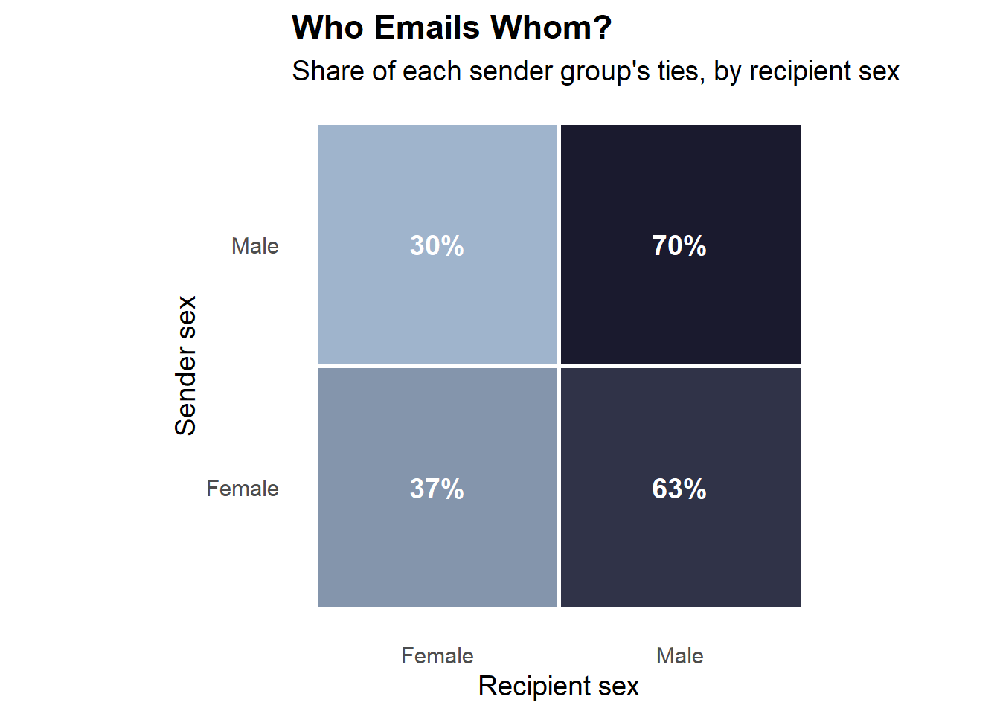
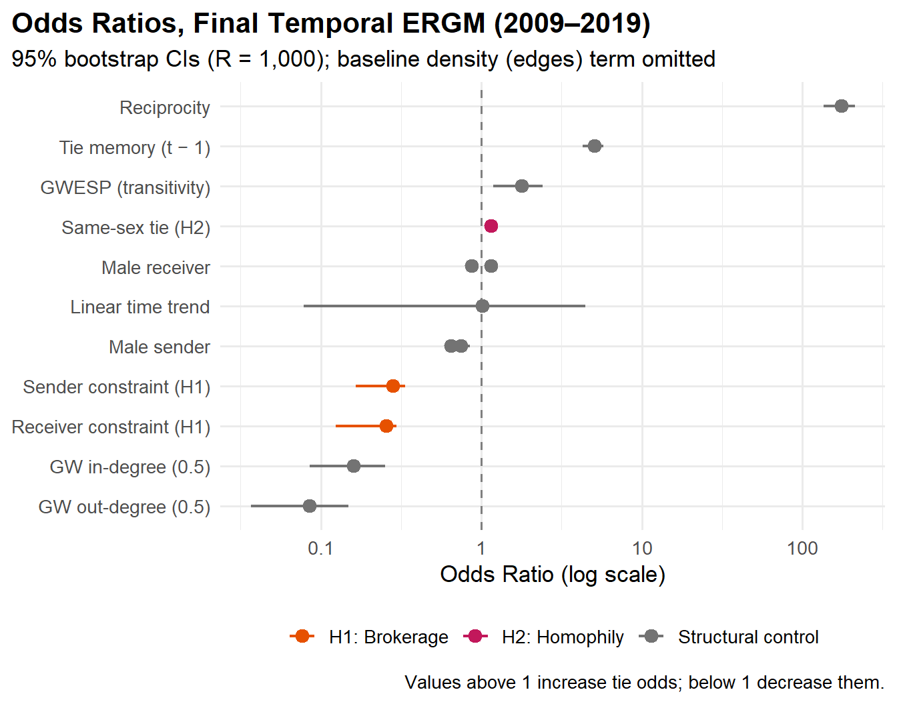
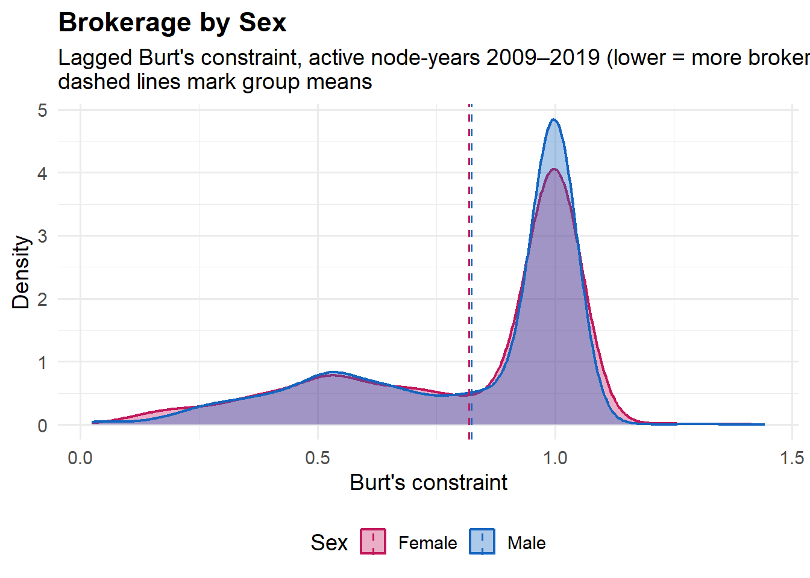

Epstein Email Network
Brokerage, homophily, and tie formation in an elite communication network
In progress
Networks
Python
R
A temporal network of the released Epstein email records, modeled with bootstrapped TERGMs to test brokerage and same-sex homophily.
The full write-up - model specification, nesting strategy, diagnostics, and replication details - is available upon request via the Contact page.
Project summary
This ongoing project maps the social network embedded in the released Epstein corpus from the Epstein Transparency Act. A custom Python pipeline extracts email headers from roughly 1.4 million released email records, using a Mask R-CNN model to detect redactions and dual OCR engines to recover text, before a multi-pass name resolution process in R consolidates senders and recipients into a clean longitudinal network of 990 individuals across 21 time periods. The network is then modeled using Bootstrapped Temporal Exponential Random Graph Models (BTERGM) to test two hypotheses drawn from the literature on gender and social capital. Research Questions: (1) Do ties form disproportionately between individuals of the same sex? (2) Are women more likely to occupy brokerage positions, as measured by lagged Burt’s constraint? Results support sex-based homophily in tie formation and offer weak support for the brokerage hypothesis-women exhibit marginally lower constraint (i.e., are slightly more broker-like), though the effect is small. A notable secondary finding is an asymmetric sex pattern in tie formation: men initiate fewer ties but receive more. This work was completed in collaboration with Boaz Alkalay and Elizabeth Miller.
Analysis
The Department of Justice’s release of the Epstein records1 offers a rare chance to observe an elite communication network directly rather than through court testimony or journalistic reconstruction. With two collaborators, I built a Python pipeline that extracts headers from roughly 1.4 million released email records - classifying pages with dual OCR engines, locating redactions with a fine-tuned Mask R-CNN, and recovering sender and recipient fields - then resolved names in R through a six-pass matching pipeline (exact, substring, middle-initial, reversal, Jaro-Winkler fuzzy, and curated regex) into a longitudinal directed network of 990 confirmed unique individuals across 21 yearly waves, 2000–2020 (6,250 unique communication ties). Two hypotheses drawn from the literature on brokerage and gendered social capital2 structure the analysis: H1, that actors in structural brokerage positions - operationalized as low lagged Burt’s constraint3 - are disproportionately active in tie formation, with a supplementary question of who occupies those positions; and H2, that ties form disproportionately between individuals of the same sex.
The pooled network shows the classic core–periphery shape of an ego-anchored corpus: a dense communicative core surrounded by hundreds of low-degree contacts. Nodes are colored by sex; all names and identifying labels are deliberately withheld - the analysis concerns the structure of the network, not the identification of individuals. Activity is far from uniform in time: the network is sparse before Epstein’s 2008 plea agreement and peaks between roughly 2013 and 2018, which motivates estimating the final model on the 2009–2019 window rather than the full panel.
A descriptive first pass at H2: row-normalizing ties by sender sex shows how each group distributes its emails across recipient sexes. Descriptives like this cannot distinguish genuine homophily from confounding structure - reciprocity, degree heterogeneity, and the strong tendency of past ties to persist all shape raw same-sex proportions - which is exactly what the temporal ERGM below is for.

Modeling Tie Formation Over Time
Because ties are interdependent - an email begets a reply, shared contacts beget introductions - standard regression is inappropriate. We instead estimate a Bootstrapped Temporal Exponential Random Graph Model (btergm)4 on the 2009–2019 window, with structural controls for reciprocity, geometrically weighted degree distributions, transitive closure (GWESP), a linear time trend, and a one-year tie-memory term (R = 1,000 bootstrap resamples). H1 enters as sender- and receiver-side effects of Burt’s constraint, computed on the prior year’s network so the predictor is not endogenous to the ties being modeled; H2 enters as a same-sex match term alongside sender and receiver sex main effects. Out-of-sample tie prediction is strong (ROC AUC = 0.932 vs. a 0.51 random baseline; precision–recall AUC = 0.731 vs. 0.001), though a substantial share of that performance is carried by the memory term - persistence, not novelty, dominates elite email networks.

H1 is supported. A one-unit increase in constraint cuts the odds of receiving a tie by 74.4% (OR = 0.26, 95% CI [0.12, 0.30]) and of sending one by 71.8% (OR = 0.28, 95% CI [0.17, 0.34]) - low-constraint brokers are the network’s most active participants. H2 is supported. Same-sex dyads are 15.7% more likely to form a tie than mixed-sex dyads (OR = 1.16, 95% CI [1.10, 1.21]), net of reciprocity (OR = 176.57), popularity, transitivity, and tie persistence (memory OR = 5.09). The sex main effects reveal an unhypothesized asymmetry: male senders are 25.1% less likely to initiate a tie (OR = 0.75), while male receivers are 15.8% more likely to receive one (OR = 1.16) - women disproportionately write, men are disproportionately written to.
H1’s supplementary question - who occupies the brokerage positions? Burt’s constraint is bounded on [0, 1]: high values mean an ego’s contacts are densely interconnected (little brokerage opportunity), low values mark brokers bridging otherwise disconnected groups. Because the outcome is bounded, it is modeled with a beta regression (logit link) rather than OLS, whose residual diagnostics failed here - a specification choice that materially changed the conclusion. Controlling for year fixed effects among active nodes, men have significantly higher constraint than women (β = -0.018, 95% CI [-0.104, 0.068], z = -0.42), meaning women disproportionately occupy the broker-like positions - though the gap is modest in practical terms (about 0.02 SD).

The picture that emerges is of an elite network whose most active participants are its brokers, that clusters strongly by sex in who talks to whom, and in which women both initiate more communication and - modestly - occupy more of the structurally advantageous positions. Three caveats travel with these results: the corpus is the product of a federal investigation and is therefore an inherently selected sample of the true communication network; predictive performance leans heavily on tie persistence; and an MCMC-based mtergm robustness check proved computationally infeasible at this network size, leaving coefficient stability across bootstrap seeds as the primary robustness evidence. Full details, diagnostics, and replication materials are available upon request via the Contact page.
Footnotes
U.S. Department of Justice, release of the Epstein email records (2025). ↩︎
Burt, R. S. (1998). “The Gender of Social Capital.” Rationality and Society, 10(1), 5–46.↩︎
Burt, R. S. (1992). Structural Holes: The Social Structure of Competition. Harvard University Press.↩︎
Leifeld, P., Cranmer, S. J., & Desmarais, B. A. (2018). “Temporal Exponential Random Graph Models with btergm.” Journal of Statistical Software, 83(6).↩︎